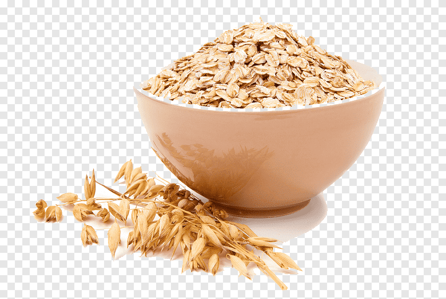

Overnight Oats

An easy overnight oats recipe for a delicious breakfast!
Ingredients
1/4 tsp ground cinnamon
50g rolled porrige oats
2 tbsp natural yoghurt
50g mixed berries
drizzle of honey
1/2 tbsp almond butter
Home